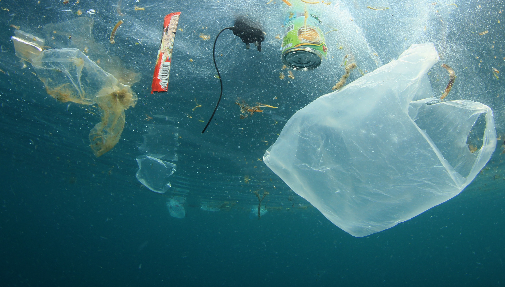
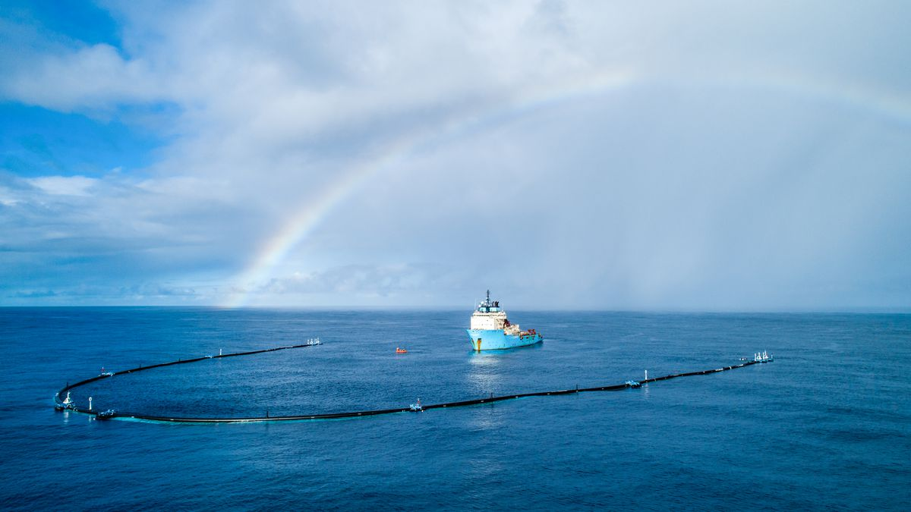

Imagine an area 34 times the size of Manhattan. Now imagine it covered ankle-deep in plastic waste — piles of soda bottles and plastic bags, takeout containers by the mile, drinking straws as far as the eye can see. That’s a total of about 19 billion pounds of garbage. And according to one of the best estimates available, that’s how much plastic waste ends up in our oceans every year.
“We’re being overwhelmed by our waste,” said Jenna Jambeck, an environmental engineer who led the 2015 study that determined this staggering number. According to Jambeck’s research, this figure is on track to double by 2025 unless something is done, swiftly and at a global scale, to stem the tide of garbage.
Plastic ― a versatile, durable and inexpensive material ― has in many ways been a boon to humanity, used in everything from medical equipment to parts of airplanes. But some of the very traits that have made plastics so popular (they’re cheap, and therefore easy to throw away) have also made them a growing problem in our landfills and oceans. Today, plastics are the No. 1 type of trash found in the sea. Ocean Conservancy, a nonprofit that organizes an annual coastal cleanup event in more than 150 countries worldwide, said plastic debris makes up around 85 percent of all the trash collected from beaches, waterways and oceans ― and that’s just the stuff we can see.
There are also untold numbers of extremely small plastic fragments in marine waters. Plastics are non-biodegradable and merely break down into smaller and smaller pieces with exposure to sunlight. These fragments, known as microplastics, are less than 5 millimeters long, or about the size of a sesame seed. Some are microbeads, tiny pieces of plastic that are added as exfoliants to health and beauty products, while others come from larger plastic pieces that have degraded over time.Recent studies have found that microplastics can also get washed out of synthetic clothing, like those made of polyester or acrylic. A 2016 paper concluded that a single cycle of a washing machine could release more than 700,000 microplastic fibers into the environment.
“The UN says there could be as many as 51 trillion microplastic particles in our oceans”
Many of them have accumulated in five enormous swirling ocean convergences known as gyres. Marcus Eriksen, a co-founder of the 5 Gyres Institute, an organization dedicated to reducing plastic pollution, describes marine microplastics as a “plastic smog throughout the world’s oceans.”
So, how does all this plastic waste end up in the oceans? Some of it comes from ships and offshore oil and gas platforms, but more than 80 percent of plastic waste in the oceans comes from land. Activities like the deliberate dumping of garbage into waterways and water pollution by plastic manufacturers contribute to some of this ocean trash, but mismanaged waste disposal appears to be the primary culprit. In 2010, according to Jambeck’s research, over 50 percent of waste in more than 60 countries worldwide was found to be inadequately managed, mostly due to a lack of waste management infrastructure coupled with ballooning populations. In China, Indonesia, Vietnam, Thailand and the Philippines ― which were identified in a 2015 Ocean Conservancy report as the top five plastic-polluting nations in the world ― the amount of mismanaged waste was closer to 75 percent or more.
Developing nations don’t bear all the blame: The United States has an ocean pollution problem, too. The main issue in this country is littering, according to Jambeck. “Even though we do have robust and effective waste management systems, we have litter,” she said. “And because our per-person waste generation rate is so high in the U.S., even that small amount of litter contributes to this problem.” The United States is one of the world’s top five waste-generating developed countries, according to the World Economic Forum.
Litter that consists of single-use plastic products is a particularly troublesome source of ocean garbage ― the plastic bag wafting in the wind that finds its way to a storm drain; the potato chip bag forgotten on a beach; the plastic soda bottle washed away in a stream that leads to a river and, finally, the sea. Worldwide, “single-use packaging is the biggest source of trash” found in or near bodies of water, said Ocean Conservancy’s Nick Mallos. In 2015, volunteers in the group’s International Coastal Cleanup event collected almost 1 million plastic beverage bottles, 800,000 plastic bottle caps, and about half a million each of plastic bags and drinking straws — and this was in just a single day.
Though it seems now that the world couldn’t possibly function without them, consumer plastics are a remarkably recent invention. The first plastic bags were introduced in the 1950s, the same decade that plastic packaging began gaining in popularity in the United States.“What I think many people aren’t aware of is just how quickly the amount of plastic in the world has increased,” said Jambeck, speaking from her home in Athens, Georgia, earlier this month. According to her research, global plastic resin production has increased by about 620 percent since 1975.This growth has happened so fast, in fact, that science is still catching up with the change. Plastics pollution research, for instance, is still a very early science. “We put all these plastics into the environment and we still don’t really know what the outcomes are going to be,” said Susanne Brander, an ecotoxicologist at the University of North Carolina at Wilmington who studies the impact of plastic pollution on humans and wildlife.
“What we do know, though, is disturbing...”
Ocean Conservancy says plastics are believed to threaten at least 600 different wildlife species. One in three leatherback turtles, which often mistake plastic bags for edible jellyfish, have been found with plastic in their bellies. In February, a dead whale beached on Norway’s coast had 30 plastic bags in its stomach. Ninety percent of seabirds, including albatross and petrels, are now eating plastics on a regular basis. By 2050, that figure is expected to rise to 100 percent.And it’s not just wildlife that’s threatened by the plastics in our seas. A growing body of evidence suggests humans are consuming plastics through the seafood we eat.
In one study, 1 in 4 fish that researchers purchased from fish markets in Indonesia and the United States during the second half of 2014 were found to have plastic in their guts. It appears that some fish are mistaking plastic fragments coated in bacteria and algae for normal food sources. Studies have also found microplastics in the digestive systems of shellfish, including oysters, mussels and lobsters. Two Belgian researchers, looking at the amount of microplastics in some shellfish, concluded in 2014 that the average European seafood consumer could be eating 11,000 microplastics every year.
With this in mind, experts say that all of us have a critical role to play in mitigating the issue ― in ways both big and small.At a global level, several countries have recently committed to reducing the amount of plastic they send into the oceans. At the Economist World Ocean Summit this week, 10 nations ― including Uruguay, Costa Rica, France and Indonesia ― vowed to reduce plastic marine litter as part of U.N. Environment’s new #CleanSeas initiative. As part of the campaign, Indonesia, one of world’s top plastic polluters, committed to slashing its marine litter by 70 percent by 2025. Uruguay said it will introduce a tax on single-use plastic bags later this year. The United States has yet to join the U.N. campaign. But it’s not just countries that need to do their part. Corporations also have a role, as do individuals (yes, you).
We can all start by thinking twice before we use single-use plastic products ― and when we do use them, we should take care to properly dispose of them or recycle.“The one thing I’ve learned in doing my research is that population density is a huge driver of ocean pollution, so especially in places with high population densities, our individual choices really do matter,” Jambeck said. “Things that may seem mundane, like using a reusable bottle or a reusable bag — when taken collectively, these choices really do make a difference. I think it’s empowering as a citizen to know that your choices can make an impact.”
What is being done to cleanup our oceans?
THE OCEAN CLEANUP develops advanced technologies to rid the world's oceans of plastic. A full-scale deployment of the systems is estimated to clean up 50% of the Great Pacific Garbage Patch every 5 years.